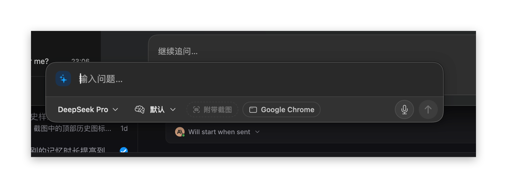

按快捷键呼出，悬浮在任意应用之上。目标：一眼看清「问什么 · 带了什么上下文 · 用哪个模型」，输入区是主角，其余降噪。尺寸单位为 pt（@1x），深色为主，浅色同构。

0 24 60 / 55%，在任何窗口上都能「浮」起来。去掉底栏分隔线。AskContextPreview）。AskBanner：面板下方 6pt，32pt 高，琥珀软底 + 1pt 同色 18% 描边，带单一动作。AskMetrics.launcherHeight 计算，需把上下文行 34pt 计入。| 宽 / 圆角 | 680 / 16（原 18）；外侧透明留白 6 保留给阴影 |
| 高度 | 34 上下文 + 输入(24×行数 + 10) + 44 底栏；单行 = 112 |
| 面板 | 深 #262626 / 浅 #FFFFFF，单一底色 |
| 描边 | 深 白 16% / 浅 黑 10%；录音 主蓝 1.5 + 3pt 光晕 |
| 主色 | #1D81DD（深）/ #1670C8（浅）= AskTheme.primaryAction |
| 字号 | 输入 16 · 模型 pill 12.5/500 · 上下文 12 · 提示 11.5 |
| 控件 | pill 高 28 圆角 8；圆钮 30；键帽 18 |
| 文字色 | 一级 #F2F2F2 · 二级 #A8A8AB · 三级 #6E6E73 |